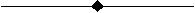

TB, Lab, MATID,
NTEMP, NPTS,
TBOPT, --,
FuncName
Activates a data table for material
properties or special element input.
For a list of elements and the material models they
support (Lab value), see Element Support for Material Models in the Element Reference.
For a list of material models and the elements that support them, see Material Model Element Support in the Material Reference.
-
Lab Material model data table type:
AFDM
—
AHYPER
—
ANEL
—
AVIS
—
BB
—
BH
—
Magnetic field data.
BISO
—
Bilinear isotropic hardening using von Mises or Hill plasticity.
BKIN
—
Bilinear kinematic hardening using von Mises or Hill plasticity.
CAST
—
CDM
—
Mullins effect (for isotropic hyperelasticity models).
CFOAM
—
CGCR
—
Crack-growth fracture criterion (CGROW).
CHABOCHE
—
Chaboche nonlinear kinematic hardening using von Mises or Hill plasticity.
CONCR
—
Concrete element or material data.
CREEP
—
Creep. Pure creep, creep with isotropic hardening plasticity, or creep with kinematic hardening plasticity using both von Mises or Hill potentials.
CTE
—
CZM
—
DENS
—
DLST
—
DMGE
—
DMGI
—
DP
—
DPER
—
EDP
—
Extended Drucker-Prager (for granular materials such as rock, concrete, soil, ceramics and other pressure-dependent materials).
ELASTIC
—
ELST
—
EXPE
—
FCON
—
FCLI
—
Material strength limits for calculating failure criteria.
FLUID
—
FRIC
—
Coefficient of friction based on Coulomb's Law or user-defined friction.
GASKET
—
GURSON
—
Gurson pressure-dependent plasticity for porous metals.
HFLM
—
HILL
—
Hill anisotropy. When combined with other material options, simulates plasticity, viscoplasticity, and creep -- all with the Hill potential.
HYPER
—
Hyperelasticity material models (Arruda-Boyce, Blatz-Ko, Extended Tube, Gent, Mooney-Rivlin [default], Neo-Hookean, Ogden, Ogden Foam, Polynomial Form, Response Function, Yeoh, and user-defined).
INTER
—
JOIN
—
Joint (linear and nonlinear elastic stiffness, linear and nonlinear damping, and frictional behavior).
JROCK
—
MC
—
MELAS
—
MIGR
—
MPLANE
—
NLISO
—
Voce isotropic hardening law (or power law) for modeling nonlinear isotropic hardening using von Mises or Hill plasticity.
PELAS
—
PERF
—
Perforated material for acoustics; equivalent fluid model of perforated media, poroelastic material model, and transfer admittance matrix.
PIEZ
—
PLASTIC
—
Nonlinear plasticity.
PM
—
Porous media. Coupled pore-fluid diffusion and structural model of porous media.
PRONY
—
Prony series constants for viscoelastic materials.
PZRS
—
RATE
—
Rate-dependent plasticity (viscoplasticity) when combined with the BISO, NLISO or PLASTIC material options, or rate-dependent anisotropic plasticity (anisotropic viscoplasticity) when combined with the HILL and BISO, NLISO or PLASTIC material options.
The exponential visco-hardening option includes an explicit function for directly defining static yield stresses of materials.
The Anand unified plasticity option requires no combination with other material models.
SDAMP
—
Material damping coefficients.
SHIFT
—
Shift function for viscoelastic materials.
SMA
—
Shape memory alloy for simulating hysteresis superelastic behavior with no performance degradation. Plane stress is not supported.
SOIL
—
STATE
—
User-defined state variables. Valid with TB,USER and used with either the
UserMatorUserMatThsubroutine. Also valid with TB,CREEP (whenTBOPT= 100) and used with theUserCreepsubroutine.SWELL
—
Swelling strain function.
THERM
—
USER
—
User-defined material model (general-purpose except for incompressible material models) or thermal material model.
WEAR
—
-
MATID Material reference identification number. Default = 1.
-
NTEMP The number of temperatures for which data will be provided (if applicable). Specify temperatures via the TBTEMP command.
-
NPTS For most labels where
NPTSis defined, the number of data points to be specified for a given temperature. Define data points via the TBDATA or TBPT commands.--Unused field.
-
FuncName The name of the function to be used (entered as %
tabname%, wheretabnameis the name of the table created by the Function Tool). Valid only whenLab= JOIN (joint element material) and nonlinear stiffness or damping are specified on theTBOPTfield (see "JOIN -- Joint Element Specifications"). The function must be previously defined using the Function Tool. To learn more about how to create a function, see Using the Function Tool in the Basic Analysis Guide.

Data Table Specifications
Following are input requirements (NTEMP,
NPTS, and TBOPT values) and links to
detailed documentation for each data table type
(TB,Lab value):
AFDM -- Acoustic Frequency-Dependent Material Specifications
-
NTEMP: Not used.
-
NPTS: Not used.
-
TBOPT: Acoustic material options:
- MAT
Material properties
- THIN
Thin layer
- RECT
Rectangular cross-section
- CIRC
Circular cross-section
- ROOM
Diffusion properties for room acoustics
- References:
Defining Acoustic Material Properties in the Acoustic Analysis Guide
Acoustic Frequency-Dependent Materials in the Material Reference
See the TBFIELD command for more information about defining temperature- and/or frequency-dependent properties.
AHYPER -- Anisotropic Hyperelasticity Specifications
-
NTEMP: Number of temperatures for which data will be provided. Default = 1. Maximum = 40.
-
NPTS: Number of data points to be specified for a given temperature.
-
TBOPT: Anisotropic hyperelastic material options.
- POLY --
Polynomial strain energy potential.
- EXPO --
Exponential strain energy potential.
- AVEC --
Define the A vector.
- BVEC --
Define the B vector.
- PVOL --
Volumetric potential.
- USER --
User-defined potential invariant set type.
- UNUM --
User-defined invariant set number.
- AU01 --
User-defined material parameters.
- FB01 --
User-defined fiber directions.
- References:
Anisotropic Hyperelasticity in the Material Reference
Anisotropic Hyperelasticity Material Model in the Structural Analysis Guide
ANEL -- Anisotropic Elasticity Specifications
This material model is not supported for use with the coefficient of thermal expansion (TB,CTE). The maximum number of ANEL tables is 1,000,000.
-
NTEMP: Number of temperatures for which data will be provided. Default = 6. Maximum = 6.
-
NPTS: Not used.
-
TBOPT: Anisotropic elastic matrix options.
- 0 --
Elasticity matrix used as supplied (input in stiffness form).
- 1 --
Elasticity matrix inverted before use (input in flexibility form).
- References:
AVIS -- Anisotropic Viscosity Specifications
-
NTEMP: Not used.
-
NPTS: Not used.
-
TBOPT: Anisotropic viscosity matrix options:
- 0
Viscosity matrix (used as specified).
- 1
Fluency matrix (converted to viscosity matrix before use).
- References:
BB -- Bergstrom-Boyce Hyperelasticity Specifications
-
NTEMP: Number of temperatures for which data will be provided. Default = 1. The maximum must be a value such that (
NTEMPxNPTS) <= 1000.-
NPTS: Number of material constants.
-
TBOPT: Isochoric or volumetric strain-energy function:
- ISO --
Define material constants for isochoric strain energy.
- PVOL --
Define material constants for volumetric strain energy.
- References:
Bergstrom-Boyce in the Theory Reference
Bergstrom-Boyce Material in the Material Reference
Bergstrom-Boyce Hyperviscoelastic Material Model in the Structural Analysis Guide
BH -- Magnetic Field Data Specifications
-
NTEMP: Not used.
-
NPTS: Number of data points to be specified. Default = 20. Maximum = 500.
-
TBOPT: BH curve options.
- References:
BISO -- Bilinear Isotropic Hardening Specifications
-
NTEMP: Number of temperatures for which data will be provided. Default = 1. Maximum = 6.
-
NPTS: Not used.
-
TBOPT: Not used.
- References:
BKIN -- Bilinear Kinematic Hardening Specifications
-
NTEMP: Number of temperatures for which data will be provided. Default = 1. Maximum = 6.
-
NPTS: Not used.
-
TBOPT: Stress-strain options.
- 0 --
No stress relaxation with temperature increase (not recommended for nonisothermal problems).
- 1 --
Rice's hardening rule, which takes into account stress relaxation with increasing temperature (default).
- References:
CAST -- Cast Iron Plasticity Specifications
-
NTEMP: Number of temperatures for which data will be provided. Default = 1. Maximum = 10.
-
NPTS: Not used.
-
TBOPT: Cast iron options:
- ISOTROPIC --
Specifies cast iron plasticity with isotropic hardening.
- TENSION --
Defines stress-strain relation in tension.
- COMPRESSION --
Defines stress-strain relation in compression.
- ROUNDING --
Defines tension yield surface rounding factor.
- References:
CDM -- Mullins Effect Hyperelasticity Specifications
-
NTEMP: Number of temperatures for which data will be provided. Default = 1. The maximum must be a value such that (
NTEMPxNPTS) <= 1000.-
NPTS: Number of data points to be specified for a given temperature.
-
TBOPT: Mullins effect option:
- PSE2 --
Pseudo-elastic model with modified Ogden-Roxburgh damage function. Requires
NPTS= 3.
- References:
Mullins Effect in the Theory Reference
Mullins Effect in the Material Reference
Mullins Effect Material Model in the Structural Analysis Guide
CFOAM -- Crushable Foam Specifications
-
NTEMP: Not used.
-
NPTS: Not used.
-
TBOPT: Crushable foam material option:
- References:
CGCR -- Crack-Growth Fracture Criterion
-
NTEMP: Number of temperatures for which data will be provided. Default = 1.
-
NPTS: Number of data points to be specified for a given temperature.
-
TBOPT: Fracture criterion option:
- LINEAR --
Linear fracture criterion. Valid when
NPTS= 3.- BILINEAR --
Bilinear fracture criterion. Valid when
NPTS= 4.- BK --
B-K fracture criterion. Valid when
NPTS= 3.- MBK --
Modified B-K (Reeder) fracture criterion. Valid when
NPTS= 4.- POWERLAW --
Wu's Power Law fracture criterion. Valid when
NPTS= 6.- USER --
User-defined fracture criterion. Valid when
NPTS= 20.- PSMAX --
Circumferential stress criterion based on when sweeping around the crack tip at a given radius. Valid when
NPTS= 1. This option is used in an XFEM-based crack-growth analysis only.- STTMAX --
Maximum circumferential stress criterion. Valid when
NPTS= 1. This option is used in an XFEM-based crack-growth analysis only.- RLIN --
Rigid linear evolution law for the decay of stress. Valid when
NPTS= 4. This option is used in an XFEM-based crack-growth analysis only.- PARIS --
Paris' Law for fatigue crack growth. Valid when
NPTS= 2.
Note: In an XFEM-based crack-growth analysis, the only valid options are PSMAX, STTMAX and RLIN. The PARIS option is valid for XFEM-based fatigue crack-growth analysis only.
CHABOCHE -- Chaboche Nonlinear Kinematic Hardening Specifications
-
NTEMP: Number of temperatures for which data will be provided. Default = 1. The maximum value of
NTEMPis such thatNTEMPx (1 + 2NPTS) = 1000.-
NPTS: Number of kinematic models to be superposed. Default = 1. Maximum = 5.
-
TBOPT: - (blank) --
Default option for nonlinear kinematic hardening.
- TRATE --
Include temperature-rate term in back-stress evolution.
- References:
CONCR -- Concrete Plasticity Specifications
-
NTEMP: Number of temperatures for which data will be provided (used only if
TBOPT= 0 or 1). Default = 6. Maximum = 6.-
NPTS: Not used.
-
TBOPT: Concrete material options.
- DP --
Drucker-Prager concrete strength parameters.
- RCUT --
Rankine tension failure parameter.
- DILA --
Drucker-Prager concrete dilatation.
- HSD2 --
Drucker-Prager concrete exponential hardening/softening/dilitation (HSD) behavior.
- HSD4 --
Drucker-Prager concrete steel reinforcement HSD behavior.
- HSD5 --
Drucker-Prager concrete fracture energy HSD behavior.
- HSD6 --
Drucker-Prager concrete linear HSD behavior.
- FPLANE --
Drucker-Prager concrete joint parameters.
- FTCUT --
Drucker-Prager concrete joint tension cutoff.
- FORIE --
Drucker-Prager concrete joint orientation.
- MW --
Menetrey-Willam constitutive model.
- MSOL --
- References:
Drucker-Prager Concrete in the Material Reference
Hardening, Softening and Dilatation (HSD) Behavior in the Material Reference
CREEP -- Creep Specifications
-
NTEMP: Number of temperatures for which data will be provided. Default = 1.
-
NPTS: Number of data points to be specified for a given temperature.
-
TBOPT: Creep model options.
- 1 through 13 --
Implicit creep option. See Table 4.2: Implicit Creep Equations for a list of available equations.
- 100 --
USER CREEP option. Define the creep law using the USERCREEP.F subroutine. See the Guide to User-Programmable Features in the Programmer's Reference for more information.
- References:
Creep in the Material Reference
Creep Material Model in the Structural Analysis Guide
See also Material Model Combinations in the Material Reference.
CTE -- Coefficient of Thermal Expansion Specifications
-
NTEMP: No limit.
-
NPTS: Not used.
-
TBOPT: - (blank) --
Enter the secant coefficients of thermal expansion (CTEX,CTEY,CTEZ) (default).
- FLUID --
Fluid thermal-expansion coefficient for porous media.
- USER --
- References:
Thermal Expansion in the Material Reference
Porous Media Mechanics in the Material Reference
Subroutine userthstrain (Defining Your Own Thermal Strain) in the Programmer's Reference
See also TBFIELD (for defining frequency-dependent, temperature-dependent, and user-defined field-variable-based properties).
CZM -- Cohesive Zone Specifications
-
NTEMP: Number of temperatures for which data will be provided. Default = 1.
-
NPTS: Number of data points to be specified for a given temperature.
-
TBOPT: Cohesive zone material options.
- EXPO --
Exponential material behavior. Valid for interface elements and contact elements.
- BILI --
Bilinear material behavior. Valid for interface elements, contact elements, and in an XFEM-based crack-growth analysis when cohesive behavior on the initial crack is desired.
- CBDD --
Bilinear material behavior with linear softening characterized by maximum traction and maximum separation. Valid for contact elements only.
- CBDE --
Bilinear material behavior with linear softening characterized by maximum traction and critical energy release rate. Valid for contact elements only.
- VREG --
Viscous regularization. Valid for interface elements and contact elements. Also valid in an XFEM-based crack-growth analysis when cohesive behavior is specified for the initial crack.
- USER --
User-defined option. Valid for interface elements only.
- References:
Cohesive Zone Material (CZM) Model in the Theory Reference
Cohesive Material Law in the Material Reference
Subroutine userCZM (Defining Your Own Cohesive Zone Material) in the Programmer's Reference
XFEM-Based Crack Analysis and Crack-Growth Simulation in the Fracture Analysis Guide
DENS -- Mass Density Specifications
-
NTEMP: Not used.
-
NPTS: 1
-
TBOPT: Not used.
- References:
See TBFIELD and User-Defined Field Variables in the Material Reference for more information about defining temperature-dependent and/or user-defined field-variable-based properties.
DLST -- Anisotropic Dielectric Loss Tangent Specifications
-
NTEMP: Not used.
-
NPTS: Not used.
-
TBOPT: Not used.
- References:
Anisotropic Dielectric Loss Tangent in the Material Reference
DMGE -- Damage Evolution Law Specifications
-
NTEMP: Number of temperatures for which data will be provided. Default = 1.
-
NPTS: Number of data points to be specified for a given temperature. Default = 4 when
TBOPT= MPDG-
TBOPT: Damage initiation definition:
- 1 or MPDG --
Progressive damage evolution based on simple instant material stiffness reduction.
- 2 or CDM --
Progressive damage evolution based on continuum damage mechanics.
- Reference:
DMGI -- Damage Initiation Criteria Specifications
-
NTEMP: Number of temperatures for which data will be provided. Default = 1.
-
NPTS: Number of data points to be specified for a given temperature. Default = 4 when
TBOPT= FCRT.-
TBOPT: Damage initiation definition:
- 1 or FCRT --
Define failure criteria as the damage initiation criteria.
- Reference:
DP -- Classic Drucker-Prager Plasticity Specifications
-
NTEMP: Not used.
-
NPTS: Not used.
-
TBOPT: Not used.
- References:
DPER -- Anisotropic Electric Permittivity Specifications
EDP -- Extended Drucker-Prager Plasticity Specifications
-
NTEMP: Number of temperatures for which data will be provided. Default = 1. Maximum = 40.
-
NPTS: Number of data points to be specified for a given temperature.
-
TBOPT: EDP material options.
- LYFUN --
Linear yield function.
- PYFUN --
Power law yield function.
- HYFUN --
Hyperbolic yield function.
- LFPOT --
Linear flow potential function.
- PFPOT --
Power law flow potential function.
- HFPOT --
Hyperbolic flow potential function.
- CYFUN --
Cap yield function.
- CFPOT --
Cap flow potential function.
- References:
ELASTIC -- Elasticity Specifications
-
NTEMP: Number of temperatures for which data will be provided.
-
NPTS: Number of properties to be defined for the material option. This value is set automatically according to the elasticity option (
TBOPT) selected. IfTBOPTis not specified, default settings becomeNPTS= 2 andTBOPT= ISOT.-
TBOPT: Elasticity options:
- ISOT --
Isotropic property (EX, NUXY) (default). Setting
NPTS= 2 also selects this option automatically.- OELN --
Orthotropic option with minor Poisson's ratio (EX, EY, EZ, GXY, GYZ, GXZ, NUXY, NUYZ, NUXZ).
NPTS= 9. SettingNPTS= 9 selects this option automatically. All nine parameters must be set, even for the 2-D case.- OELM --
Orthotropic option with major Poisson's ratio (EX, EY, EZ, GXY, GYZ, GXZ, PRXY, PRYZ, PRXZ).
NPTS= 9. All nine parameters must be set, even for the 2-D case.- AELS --
Anisotropic option in stiffness form (D11, D21, D31, D41, D51, D61, D22, D32, D42, D52, D62, D33, D43, ..... D66).
NPTS= 21. SettingNPTS= 21 selects this option automatically.- AELF --
Anisotropic option in compliance form (C11, C21, C31, C41, C51, C61, C22, C32, C42, C52, C62, C33, C43, ..... C66).
NPTS= 21.- USER --
User-defined linear elastic properties. For more information on the
user_tbelasticsubroutine, see the Guide to User-Programmable Features in the Programmer's Reference.
- References:
See TBFIELD for more information about defining temperature- and/or frequency-dependent properties.
ELST -- Anisotropic Elastic Loss Tangent Specifications
-
NTEMP: Not used.
-
NPTS: Not used.
-
TBOPT: Not used.
- References:
EXPE -- Experimental Data Specifications
-
NTEMP: Number of temperatures for which data will be provided.
-
NPTS: Number of data points to be specified for a given temperature.
-
TBOPT: Experimental data type:
- UNITENSION --
Uniaxial tension experimental data.
- UNICOMPRESSION --
Uniaxial compression experimental data.
- UNIAXIAL --
Uniaxial experimental data (combined uniaxial tension and compression).
- BIAXIAL --
Equibiaxial experimental data.
- SHEAR --
Pure shear experimental data (also known as planar tension).
- SSHEAR --
Simple shear experimental data.
- VOLUME --
Volumetric experimental data.
- GMODULUS --
Shear modulus experimental data.
- KMODULUS --
Bulk modulus experimental data.
- EMODULUS --
Tensile modulus experimental data.
- NUXY --
Poisson's ratio experimental data.
- References:
Experimental Data in the Material Reference
Experimental Response Functions in the Theory Reference
Viscoelasticity in the Material Reference
See also TBFIELD for information about defining field-dependent experimental data.
FCON -- Fluid Conductance Data Specifications
-
NTEMP: Number of temperatures for which data will be provided. Default = 1. Maximum = 20.
-
NPTS: Number of data points to be specified for a given temperature. Default = 1. Maximum = 100.
-
TBOPT: Not used.
- References:
FCLI -- Material Strength Limits Specifications
-
NTEMP: Number of temperatures for which data will be provided. Default = 1.
-
NPTS: Number of data points to be specified for a given temperature. Default = 20 when
TBOPT= 1. Default = 9 whenTBOPT= 2.-
TBOPT: Material strength limit definition:
- 1 --
Define stress-strength limits.
- 2 --
Define strain-strength limits.
- References:
FLUID -- Fluid Specifications
-
NTEMP: Number of temperatures for which data will be provided. Default = 1.
-
NPTS: Number of data points to be specified for a given temperature.
-
TBOPT: Fluid material options:
- LIQUID --
Define material constants for a liquid material.
- GAS --
Define material constants for a gas material.
- PVDATA --
Define pressure-volume data for a fluid material.
- References:
FRIC -- Coefficient of Friction Specifications
-
NTEMP: Number of temperatures for which data will be provided. Default = 1. No maximum limit.
NTEMPis not used for the following situations:Isotropic or orthotropic friction defined in terms of field data (TBFIELD command)
User-defined friction (
TBOPT= USER)
-
NPTS: Number of data points to be specified for user-defined friction (
TBOPT= USER). Not used forTBOPT= ISO orTBOPT= ORTHO.-
TBOPT: Friction options:
- ISO --
Isotropic friction (one coefficient of friction, MU) (default). This option is valid for all 2-D and 3-D contact elements.
- ORTHO --
Orthotropic friction (two coefficients of friction, MU1 and MU2). This option is valid for the following 3-D contact elements: CONTA174, CONTA175, and CONTA177.
- FORTHO --
Orthotropic friction (two coefficients of friction, MU1 and Mu2) with a friction coordinate system fixed in space. This option is valid for the following 3-D contact elements: CONTA174, CONTA175, and CONTA177.
- EORTHO --
Equivalent orthotropic friction (two coefficients of friction, MU1 and MU2). This option differs from
TBOPT= ORTHO only in the way the friction coefficients are interpolated when they are dependent upon the following field variables: sliding distance and/or sliding velocity. In this case, the total magnitude of the field variable is used to do the interpolation.- USER --
User defined friction. This option is valid for all 2-D and 3-D contact elements.
- References:
Contact Friction in the Material Reference
See also TBFIELD for more information about defining a coefficient of friction that is dependent on temperature, time, normal pressure, sliding distance, or sliding relative velocity.
GASKET -- Gasket Specifications
-
NTEMP: Number of temperatures for which data will be provided. Default = 1. The maximum number of temperatures specified is such that
NTEMP*NPTS< 2000.-
NPTS: Number of data points to be specified for a given temperature. Default = 5 for
TBOPT= PARA. Default = 1 for all other values ofTBOPT.-
TBOPT: Gasket material options.
- PARA --
Gasket material general parameters.
- COMP --
Gasket material compression data.
- LUNL --
Gasket linear unloading data.
- NUNL --
Gasket nonlinear unloading data.
- TSS --
Transverse shear data.
- TSMS --
Transverse shear and membrane stiffness data. (If selected, this option takes precedence over TSS.)
- References:
GURSON -- Gurson Plasticity Specifications
-
NTEMP: Number of temperatures for which data will be provided. Default = 1. Maximum = 40.
-
NPTS: Number of data points to be specified for a given temperature.
-
TBOPT: GURSON material options.
- BASE --
Basic model without nucleation or coalescence (default).
- SNNU --
Strain controlled nucleation.
- SSNU --
Stress controlled nucleation.
- COAL --
Coalescence.
- References:
HFLM -- Film Coefficient Data Specifications
-
NTEMP: Number of temperatures for which data will be provided. Default = 1. Maximum = 20.
-
NPTS: Number of data points to be specified for a given temperature. Default = 1. Maximum = 100.
-
TBOPT: Not used.
- References:
HILL -- Hill Plasticity Specifications
-
NTEMP: Number of temperatures for which data will be provided. Default = 1. Maximum = 40.
-
NPTS: Not used.
-
TBOPT: Hill plasticity option:
- (blank) --
Use one set of Hill parameters (default).
- PC --
Enter separate Hill parameters for plasticity and creep. This option is valid for material combinations of creep and Chaboche nonlinear kinematic hardening only.
- References:
Hill Yield Criterion in the Material Reference
See also Material Model Combinations in the Material Reference.
HYPER -- Hyperelasticity Specifications
-
NTEMP: Number of temperatures for which data will be provided. Default = 1. The maximum value of
NTEMPis such thatNTEMPxNPTS= 1000.-
NPTS: Number of data points to be specified for a given temperature, except for
TBOPT= MOONEY, whereNPTSis the number of parameters in the Mooney-Rivlin model (2 [default], 3, 5, or 9), andTBOPT= RESPONSE, whereNPTSis the number of terms in the volumetric strain energy polynomial.-
TBOPT: Hyperelastic material options.
- BOYCE--
Arruda-Boyce model. For
NPTS, default = 3 and maximum = 3.References:
Arruda-Boyce Hyperelasticity in the Material Reference
Arruda-Boyce Hyperelastic Option (TB,HYPER,,,,BOYCE) in the Structural Analysis Guide
- BLATZ --
Blatz-Ko model. For
NPTS, default = 1 and maximum = 1.References:
Blatz-Ko Foam Hyperelasticity in the Material Reference
Blatz-Ko Foam Hyperelastic Option (TB,HYPER,,,,BLATZ) in the Structural Analysis Guide
- ETUBE --
Extended tube model. Five material constants (
NPTS= 5) are required.References:
- FOAM --
Hyperfoam (Ogden) model. For
NPTS, default = 1 and maximum is such thatNTEMPxNPTSx 3 = 1000.References:
Ogden Compressible Foam Hyperelasticity in the Material Reference
Ogden Compressible Foam Hyperelastic Option (TB,HYPER,,,,FOAM) in the Structural Analysis Guide
- GENT --
Gent model. For
NPTS, default = 3 and maximum = 3.References:
Gent Hyperelasticity in the Material Reference
Gent Hyperelastic Option (TB,HYPER,,,,GENT) in the Structural Analysis Guide
- MOONEY --
Mooney-Rivlin model (default). You can choose a two-parameter Mooney-Rivlin model with
NPTS= 2 (default), or a three-, five-, or nine-parameter model by settingNPTSequal to one of these values.References:
Mooney-Rivlin Hyperelasticity in the Material Reference
Mooney-Rivlin Hyperelastic Option (TB,HYPER,,,,MOONEY) in the Structural Analysis Guide
- NEO --
Neo-Hookean model. For
NPTS, default = 2 and maximum = 2.References:
Neo-Hookean Hyperelasticity in the Material Reference
Neo-Hookean Hyperelastic Option (TB,HYPER,,,,NEO) in the Structural Analysis Guide
- OGDEN --
Ogden model. For
NPTS, default = 1 and maximum is such thatNTEMPxNPTSx 3 = 1000.References:
Ogden Hyperelasticity in the Material Reference
Ogden Hyperelastic Option (TB,HYPER,,,,OGDEN) in the Structural Analysis Guide
- POLY --
Polynomial form model. For
NPTS, default = 1 and maximum is such thatNTEMPxNPTS= 1000.References:
Polynomial Form Hyperelasticity in the Material Reference
Polynomial Form Hyperelastic Option (TB,HYPER,,,,POLY) in the Structural Analysis Guide
- RESPONSE --
Experimental response function model. For
NPTS, default = 0 and maximum is such thatNTEMPxNPTS+ 2 = 1000.References:
Response Function Hyperelasticity in the Material Reference
Response Function Hyperelastic Option (TB,HYPER,,,,RESPONSE) in the Structural Analysis Guide
- YEOH --
Yeoh model. For
NPTS, default = 1 and maximum is such thatNTEMPxNPTSx 2 = 1000.References:
Yeoh Hyperelasticity in the Material Reference
Yeoh Hyperelastic Option (TB,HYPER,,,,YEOH) in the Structural Analysis Guide
- USER --
User-defined hyperelastic model.
References:
Subroutine UserMat (Creating Your Own Material Model) in the Programmer's Reference
User-Defined Hyperelastic Material in the Material Reference
User-Defined Isotropic Hyperelastic Option (TB,HYPER,,,,USER) in the Structural Analysis Guide
INTER -- Contact Interaction Specifications
-
NTEMP: Number of temperatures for which data will be provided. Default = 1. No maximum limit.
NTEMPis used only for user-defined contact interaction (TBOPT= USER).-
NPTS: Number of data points to be specified.
NPTSis used only for user-defined contact interaction (TBOPT= USER).-
TBOPT: Contact interaction options.
The following options are valid only for general contact interactions specified via the GCDEF command:
- STANDARD --
Standard unilateral contact (default).
- ROUGH --
Rough, no sliding.
- NOSEPE --
No separation (sliding permitted).
- BONDED --
Bonded contact (no separation, no sliding).
- ANOSEP--
No separation (always).
- ABOND --
Bonded (always).
- IBOND --
Bonded (initial contact).
The following option is valid for all 2-D and 3-D contact elements:
- USER --
User-defined contact interaction.
- References:
Contact Interaction in the Material Reference
Defining Your Own Contact Interaction (
USERINTER) in the Contact Technology Guide
JOIN -- Joint Element Specifications
-
NTEMP: Number of temperatures for which data will be provided. Default = 1.
-
NPTS: Number of data points to be specified for a given temperature.
NPTSis ignored ifTBOPT= STIF or DAMP.If Coulomb friction is specified,
NPTSis used only forTBOPT= MUS1, MUS4, and MUS6.-
TBOPT: Joint element material options.
Linear stiffness behavior:
- STIF --
Linear stiffness.
Nonlinear stiffness behavior:
- JNSA --
Nonlinear stiffness behavior in all available components of relative motion for the joint element.
- JNS1 --
Nonlinear stiffness behavior in local UX direction only.
- JNS2 --
Nonlinear stiffness behavior in local UY direction only.
- JNS3 --
Nonlinear stiffness behavior in local UZ direction only.
- JNS4 --
Nonlinear stiffness behavior in local ROTX direction only.
- JNS5 --
Nonlinear stiffness behavior in local ROTY direction only.
- JNS6 --
Nonlinear stiffness behavior in local ROTZ direction only.
Linear damping behavior:
- DAMP --
Linear damping.
Nonlinear damping behavior:
- JNDA --
Nonlinear damping behavior in all available components of relative motion for the joint element.
- JND1 --
Nonlinear damping behavior in local UX direction only.
- JND2 --
Nonlinear damping behavior in local UY direction only.
- JND3 --
Nonlinear damping behavior in local UZ direction only.
- JND4 --
Nonlinear damping behavior in local ROTX direction only.
- JND5 --
Nonlinear damping behavior in local ROTY direction only.
- JND6 --
Nonlinear damping behavior in local ROTZ direction only.
Friction Behavior:
- Coulomb friction coefficient -
The values can be specified using either TBDATA (
NPTS= 0) or TBPT (NPTSis nonzero).- MUS1 --
Coulomb friction coefficient (stiction) in local UX direction only.
- MUS4 --
Coulomb friction coefficient (stiction) in local ROTX direction only.
- MUS6 --
Coulomb friction coefficient (stiction) in local ROTZ direction only.
- Coulomb friction coefficient - Exponential Law -
Use TBDATA to specify μs, μd, and c for the exponential law.
- EXP1 --
Exponential law for friction in local UX direction only.
- EXP4 --
Exponential law for friction in local ROTX direction only.
- EXP6 --
Exponential law for friction in local ROTZ direction only.
Elastic slip:
- SL1 --
Elastic slip in local UX direction only.
- SL4 --
Elastic slip in local ROTX direction only.
- SL6 --
Elastic slip in local ROTZ direction only.
- TMX1 --
Critical force in local UX direction only.
- TMX4 --
Critical moment in local ROTX direction only.
- TMX6 --
Critical moment in local ROTZ direction only.
Stick-stiffness:
- SK1 --
Stick-stiffness in local UX direction only.
- SK4 --
Stick-stiffness in local ROTX direction only.
- SK6 --
Stick-stiffness in local ROTZ direction only.
Interference fit force/moment:
- FI1 --
Interference fit force in local UX direction only.
- FI4 --
Interference fit moment in local ROTX direction only.
- FI6 --
Interference fit moment in local ROTZ direction only.
- References:
JROCK -- Jointed Rock Specifications
-
NTEMP: Not used.
-
NPTS: Not used.
-
TBOPT: - BASE --
Base material parameters.
- RCUT --
Base material tension cutoff.
- RSC --
Residual strength coupling.
- FPLANE --
Joint parameters.
- FTCUT --
Joint tension cutoff.
- FORIE --
Joint orientation.
- MSOL --
- References:
MC -- Mohr-Coulomb Specifications
-
NTEMP: Not used.
-
NPTS: Not used.
-
TBOPT: - BASE --
Mohr-Coulomb material parameters.
- RCUT --
Tension cutoff.
- RSC --
Residual strength coupling.
- POTN --
Plastic potential.
- FRICTION --
Friction angle scaling.
- COHESION --
Cohesion scaling.
- TENSION --
Tension strength scaling.
- DILATATION --
Dilatancy angle scaling.
- MSOL --
- References:
MELAS – Multilinear Elasticity Specifications
-
NTEMP: Number of temperatures for which data will be provided.
-
NPTS: Number of data points to be specified for a given temperature.
-
TBOPT: Not used.
- References:
MIGR – Migration Model Specifications
-
NTEMP: Not used.
-
NPTS: Not used.
-
TBOPT: Migration model options.
- 1 --
Atomic (or ion) flux (default).
- 2 --
Vacancy flux.
- References:
Migration Model in the Material Reference
Electric-Diffusion Analysis in the Coupled-Field Analysis Guide
Thermal-Diffusion Analysis in the Coupled-Field Analysis Guide
Structural-Diffusion Analysis in the Coupled-Field Analysis Guide
Electric-Diffusion Coupling in the Theory Reference
MPLANE -- Microplane Specifications
-
NTEMP: The number of temperatures for which data will be provided. Default = 1. Maximum is such that
NTEMPxNPTS= 1000.-
NPTS: The number of data points to be specified for a given temperature. Default = 6. Maximum is such that
NTEMPxNPTS= 1000.-
TBOPT: Microplane model options:
- ORTH --
Elastic microplane material with damage model (default).
- DPC --
Coupled damage-plasticity microplane model.
- NLOCAL --
- References:
NLISO -- Nonlinear Isotropic Hardening Specifications
-
NTEMP: Number of temperatures for which data will be provided. Default = 1. Maximum = 20.
-
NPTS: Number of data points to be specified for a given temperature. Default = 4. Maximum = 4.
-
TBOPT: Isotropic hardening options.
- VOCE --
Voce hardening law (default).
- POWER --
Power hardening law.
- References:
PERF -- Perforated Material Specifications
-
NTEMP: Not used.
-
NPTS: Not used.
-
TBOPT: Equivalent fluid model options:
- JCA
Johnson-Champoux-Allard model
- DLB
Delaney-Bazley model
- MIKI
Miki model
- ZPRO
Complex impedance and propagating constant model
- CDV
Complex density and velocity model
Poroelastic acoustic material:
- PORO
Poroelastic material model
Transfer admittance matrix options:
- YMAT
General transfer admittance matrix model
- SGYM
Transfer admittance matrix model of square grid structure
- HGYM
Transfer admittance matrix model of hexagonal grid structure
- References:
Perforated Media in the Material Reference
Equivalent Fluid of Perforated Materials in the Theory Reference
Poroelastic Acoustics in the Theory Reference
Perforated Material in the Acoustic Analysis Guide
Trim Element with Transfer Admittance Matrix in the Acoustic Analysis Guide
See TBFIELD for more information about defining temperature and/or frequency-dependent properties.
PIEZ -- Piezoelectric Matrix Specifications
-
NTEMP: Not used.
-
NPTS: Not used.
-
TBOPT: Piezoelectric matrix options.
- 0 --
Piezoelectric stress matrix [e] (used as supplied)
- 1 --
Piezoelectric strain matrix [d] (converted to [e] form before use)
- References:
PLASTIC -- Nonlinear Plasticity Specifications
-
NTEMP: Not used.
-
NPTS: Not used.
-
TBOPT: Plasticity option:
- BISO --
- BKIN –
- MISO –
- KINH --
Multilinear kinematic hardening plasticity.
The number of points (TBPT commands issued) is limited to 100 for this option.
- KSR2 --
- ISR --
- References:
PELAS -- Porous Elasticity Specifications
-
NTEMP: Not used.
-
NPTS: Not used.
-
TBOPT: - POISSON --
Porous elasticity model..
- References:
PM -- Coupled Pore-Fluid Diffusion and Structural Model of Porous Media Specifications
-
NTEMP: The number of temperatures. Default = 1. The maximum must be a value such that (
NTEMPxNPTS) <= 1000.-
NPTS: The number of material constants. Default = 4. The maximum must be a value such that (
NTEMPxNPTS) <= 1000.-
TBOPT: Porous media options:
- PERM --
Permeability
- BIOT --
Biot coefficient
- SP --
Solid property
- FP --
Fluid property
- DSAT --
Degree-of-saturation table
- RPER --
Relative-permeability table
- GRAV --
Gravity magnitude
- References:
Porous Media Material Properties in the Material Reference
Porous Media Flow in the Theory Reference
Structural-Pore-Fluid-Diffusion-Thermal Analysis in the Coupled-Field Analysis Guide
Initial Degree of Saturation and Relative Permeability Application in the Advanced Analysis Guide
See also VM260.
PRONY -- Prony Series Constant Specifications
-
NTEMP: Number of temperatures for which data will be provided. Default = 1. Maximum = 100.
Unused for
TBOPT= EXPERIMENTAL.-
NPTS: Defines the number of Prony series pairs for
TBOPT= SHEAR orTBOPT= BULK. Default = 1. Maximum = 100.The number of temperatures and Prony pairs specified should be such that
NTEMP* 2 *NPTS< 1000.Unused for
TBOPT= INTEGRATION andTBOPT= EXPERIMENTAL.-
TBOPT: Defines the behavior for viscoelasticity.
- SHEAR--
Shear Prony series.
- BULK --
Bulk Prony series.
- INTEGRATION --
Stress update algorithm.
- EXPERIMENTAL --
Complex modulus from experimental data.
- References:
PZRS -- Piezoresistivity Specifications
-
NTEMP: Not used.
-
NPTS: Not used.
-
TBOPT: Piezoresistive matrix options
- 0 --
Piezoresistive stress matrix (used as supplied)
- 1 --
Piezoresistive strain matrix (used as supplied)
- References:
RATE -- Rate-Dependent Plasticity Specifications
-
NTEMP: The number of temperatures for which data will be provided. Default is 1. Maximum is such that
NTEMPxNPTS= 1000.-
NPTS: The number of data points to be specified for a given temperature. Default = 2. Maximum is such that
NTEMPxNPTS= 1000.-
TBOPT: Rate-dependent viscoplasticity options.
- PERZYNA --
Perzyna option (default).
- PEIRCE --
Peirce option.
- EVH --
Exponential visco-hardening option.
- ANAND --
Anand option.
- References:
Rate-Dependent Plasticity (Viscoplasticity) in the Material Reference
Viscoplasticity in the Structural Analysis Guide
Rate-Dependent Plasticity in the Theory Reference
See also Material Model Combinations in the Material Reference.
SDAMP -- Material Damping Coefficient Specifications
-
NTEMP: Number of temperatures for which data will be provided. Default = 1.
-
NPTS: Number of properties to be defined for the material option. Default = 1 for each material damping option (
TBOPT) selected.-
TBOPT: Material damping options:
- STRU or 1 --
Structural damping coefficient (default).
- ALPD or 2--
Rayleigh mass proportional material damping.
- BETD or 3--
Rayleigh stiffness proportional material damping.
SHIFT -- Shift Function Specifications
-
NTEMP: Allows one temperature for which data will be provided.
-
NPTS: Number of material constants to be entered as determined by the shift function specified by
TBOPT.- 3 --
for
TBOPT= 1 or WLF- 2 --
for
TBOPT= 2 or TN-
nf-- for
TBOPT= 3 or FICT, wherenfis the number of partial fictive temperatures
-
TBOPT: Defines the shift function
- 1 or WLF --
Williams-Landel-Ferry shift function
- 2 or TN --
Tool-Narayanaswamy shift function
- 3 or FICT --
Tool-Narayanaswamy with fictive temperature shift function
- 100 --
(or USER) User-defined shift function.
- References:
SMA -- Shape Memory Alloy Specifications
-
NTEMP: Number of temperatures for which data will be provided. Default = 1.
-
NPTS: Number of data points to be specified for a given temperature. Default = 6 if
TBOPT= SUPE, or 7 otherwise.-
TBOPT: Shape memory model option:
SUPE -- Superelasticity option (default).
MEFF -- Memory-effect option.
Because the material tangent stiffness matrix is generally unsymmetric, convergence problems typically occur when
TBOPT= MEFF and the (default) full Newton-Raphson option (NROPT,FULL) is in effect; therefore, use the unsymmetric Newton-Raphson option (NROPT,UNSYM) whenTBOPT= MEFF.- Reference:
SOIL -- Soil Specifications
-
NTEMP: Not used.
-
NPTS: Not used.
-
TBOPT: - CAMCLAY --
Modified Cam-clay material model.
- MSOL --
- References:
STATE -- User-Defined State Variable Specifications
When Lab = STATE is applied to user-defined materials, the
state variable specifications affect either the
UserMat
(user-defined
material) or
UserMatTh
(user-defined thermal material) subroutine, as
appropriate. The subroutine in use depends on the element type used when
Lab = USER is specified.
-
NTEMP: Not used.
-
NPTS: Number of state variables.
-
TBOPT: Not used.
- References:
Using State Variables with User-Defined Materials in the Material Reference
SWELL -- Swelling Specifications
-
NTEMP: Number of temperatures for which data will be provided. The maximum value of NTEMP is such that NTEMP x NPTS = 1000
-
NPTS: Number of data points to be specified for a given temperature. The maximum value of NPTS is such that NPTS x NTEMP = 1000.
-
TBOPT: Swelling model options:
- LINEAR --
Linear swelling function.
- EXPT --
Exponential swelling function.
- USER --
User-defined swelling function. Define the swelling function via subroutine
userswstrain(described in the Programmer's Reference). Define temperature-dependent constants via the TBTEMP and TBDATA commands. For solution-dependent variables, define the number of variables via the TB,STATE command.
- References:
THERM -- Thermal Properties Specifications
-
NTEMP: Not used.
-
NPTS: Not used.
-
TBOPT: Thermal properties:
- COND --
Thermal conductivity.
- SPHT --
Specific heat. For porous media, solid-skeleton specific heat.
- FLSPHT --
Fluid specific heat for porous media.
- References:
USER -- User-Defined Material Model or Thermal Material Model Specifications
When Lab = USER, the TB command activates
either the
UserMat
(user-defined material) or the
UserMatTh
(user-defined thermal material) subroutine
automatically. The subroutine activated depends on the element type used.
-
NTEMP: Number of temperatures for which data will be provided. Default = 1.
-
NPTS: Number of data points to be specified for a given temperature. Default = 48.
-
TBOPT: User-defined material model (
UserMat) or thermal material model (UserMatTh) options:- NONLINEAR
Nonlinear iterations are applied (default).
- LINEAR
Nonlinear iterations are not applied. This option is ignored if there is any other nonlinearity involved, such as contact, geometric nonlinearity, etc.
- MXUP
This option indicates a UserMat material model to be used with mixed u-P element formulation for material exhibiting incompressible or nearly incompressible behavior.
- THERM
Thermal material model (
UserMatTh) for a coupled-field analysis using elements SOLID226 and SOLID227 with thermal degrees of freedom. Use this option in a coupled structural-thermal analysis to specify a user-defined thermal material model (UserMatTh) independently of the user-defined structural material model (UserMat).
- References:
Creating a User-Defined Material Model in the Material Reference
Subroutine UserMat (Creating Your Own Material Model) in the Programmer's Reference
Subroutine UserMatTh (Creating Your Own Thermal Material Model) in the Programmer's Reference
WEAR -- Contact Surface Wear Specifications
-
NTEMP: Number of temperatures for which data will be provided.
-
NPTS: Number of data points to be specified for the wear option. This value is set automatically based on the selected wear option (
TBOPT). IfTBOPTis not specified, the default becomesNPTS= 5 andTBOPT= ARCD.-
TBOPT: Wear model options:
- ARCD --
Archard wear model (default).
- USER --
User-defined wear model.
- References:
Contact Surface Wear in the Material Reference
See also TBFIELD for more information about defining temperature and/or time-dependent properties.
Notes
TB activates a data table to be used with subsequent TBDATA or TBPT commands. The table space is initialized to zero values. Data from this table are used for certain nonlinear material descriptions as well as for special input for some elements.
For a list of elements supporting each material model (Lab
value), see Material Model Element Support in the Material Reference.
For information about linear material property input, see the MP command.
This command is also valid in SOLUTION.
Product Restrictions
| Command Option Lab | Available Products |
| AFDM | DesignSpace | Pro | Premium | Enterprise | PrepPost | Solver | AS add-on |
| AHYPER | DesignSpace | Pro | Premium | Enterprise | PrepPost | Solver | AS add-on |
| ANEL | DesignSpace | Pro | Premium | Enterprise | PrepPost | Solver | AS add-on |
| AVIS | DesignSpace | Pro | Premium | Enterprise | PrepPost | Solver | AS add-on |
| BB | DesignSpace | Pro | Premium | Enterprise | PrepPost | Solver | AS add-on |
| BH | DesignSpace | Pro | Premium | Enterprise | PrepPost | Solver | AS add-on |
| BISO | DesignSpace | Pro | Premium | Enterprise | PrepPost | Solver | AS add-on |
| BKIN | DesignSpace | Pro | Premium | Enterprise | PrepPost | Solver | AS add-on |
| CAST | DesignSpace | Pro | Premium | Enterprise | PrepPost | Solver | AS add-on |
| CDM | DesignSpace | Pro | Premium | Enterprise | PrepPost | Solver | AS add-on |
| CFOAM | DesignSpace | Pro | Premium | Enterprise | PrepPost | Solver | AS add-on |
| CGCR | DesignSpace | Pro | Premium | Enterprise | PrepPost | Solver | AS add-on |
| CHABOCHE | DesignSpace | Pro | Premium | Enterprise | PrepPost | Solver | AS add-on |
| CONCR | DesignSpace | Pro | Premium | Enterprise | PrepPost | Solver | AS add-on |
| CREEP | DesignSpace | Pro | Premium | Enterprise | PrepPost | Solver | AS add-on |
| CTE | DesignSpace | Pro | Premium | Enterprise | PrepPost | Solver | AS add-on |
| CZM | DesignSpace | Pro | Premium | Enterprise | PrepPost | Solver | AS add-on |
| DLST | DesignSpace | Pro | Premium | Enterprise | PrepPost | Solver | AS add-on |
| DMGE | DesignSpace | Pro | Premium | Enterprise | PrepPost | Solver | AS add-on |
| DMGI | DesignSpace | Pro | Premium | Enterprise | PrepPost | Solver | AS add-on |
| DP | DesignSpace | Pro | Premium | Enterprise | PrepPost | Solver | AS add-on |
| DPER | DesignSpace | Pro | Premium | Enterprise | PrepPost | Solver | AS add-on |
| EDP | DesignSpace | Pro | Premium | Enterprise | PrepPost | Solver | AS add-on |
| ELASTIC | DesignSpace | Pro | Premium | Enterprise | PrepPost | Solver | AS add-on |
ELASTIC (TBOPT = USER) | DesignSpace | Pro | Premium | Enterprise | PrepPost | Solver | AS add-on |
| ELST | DesignSpace | Pro | Premium | Enterprise | PrepPost | Solver | AS add-on |
| EXPE | DesignSpace | Pro | Premium | Enterprise | PrepPost | Solver | AS add-on |
| FCON | DesignSpace | Pro | Premium | Enterprise | PrepPost | Solver | AS add-on |
| FCLI | DesignSpace | Pro | Premium | Enterprise | PrepPost | Solver | AS add-on |
| FLUID | DesignSpace | Pro | Premium | Enterprise | PrepPost | Solver | AS add-on |
| FRIC | DesignSpace | Pro | Premium | Enterprise | PrepPost | Solver | AS add-on |
| GASKET | DesignSpace | Pro | Premium | Enterprise | PrepPost | Solver | AS add-on |
| GURSON | DesignSpace | Pro | Premium | Enterprise | PrepPost | Solver | AS add-on |
| HFLM | DesignSpace | Pro | Premium | Enterprise | PrepPost | Solver | AS add-on |
| HILL | DesignSpace | Pro | Premium | Enterprise | PrepPost | Solver | AS add-on |
| HYPER | DesignSpace | Pro | Premium | Enterprise | PrepPost | Solver | AS add-on |
HYPER (TBOPT = USER) | DesignSpace | Pro | Premium | Enterprise | PrepPost | Solver | AS add-on |
| INTER | DesignSpace | Pro | Premium | Enterprise | PrepPost | Solver | AS add-on |
INTER (TBOPT = USER) | DesignSpace | Pro | Premium | Enterprise | PrepPost | Solver | AS add-on |
| JOIN | DesignSpace | Pro | Premium | Enterprise | PrepPost | Solver | AS add-on |
JOIN (TBOPT = STIF) | DesignSpace | Pro | Premium | Enterprise | PrepPost | Solver | AS add-on |
| JROCK | DesignSpace | Pro | Premium | Enterprise | PrepPost | Solver | AS add-on |
| MC | DesignSpace | Pro | Premium | Enterprise | PrepPost | Solver | AS add-on |
| MELAS | DesignSpace | Pro | Premium | Enterprise | PrepPost | Solver | AS add-on |
| MPLANE | DesignSpace | Pro | Premium | Enterprise | PrepPost | Solver | AS add-on |
| NLISO | DesignSpace | Pro | Premium | Enterprise | PrepPost | Solver | AS add-on |
| PELAS | DesignSpace | Pro | Premium | Enterprise | PrepPost | Solver | AS add-on |
| PERF | DesignSpace | Pro | Premium | Enterprise | PrepPost | Solver | AS add-on |
| PIEZ | DesignSpace | Pro | Premium | Enterprise | PrepPost | Solver | AS add-on |
| PLASTIC | DesignSpace | Pro | Premium | Enterprise | PrepPost | Solver | AS add-on |
| PM | DesignSpace | Pro | Premium | Enterprise | PrepPost | Solver | AS add-on |
| PRONY | DesignSpace | Pro | Premium | Enterprise | PrepPost | Solver | AS add-on |
| PZRS | DesignSpace | Pro | Premium | Enterprise | PrepPost | Solver | AS add-on |
| RATE | DesignSpace | Pro | Premium | Enterprise | PrepPost | Solver | AS add-on |
| SDAMP | DesignSpace | Pro | Premium | Enterprise | PrepPost | Solver | AS add-on |
| SHIFT | DesignSpace | Pro | Premium | Enterprise | PrepPost | Solver | AS add-on |
| SMA | DesignSpace | Pro | Premium | Enterprise | PrepPost | Solver | AS add-on |
| SOIL | DesignSpace | Pro | Premium | Enterprise | PrepPost | Solver | AS add-on |
| STATE | DesignSpace | Pro | Premium | Enterprise | PrepPost | Solver | AS add-on |
| SWELL | DesignSpace | Pro | Premium | Enterprise | PrepPost | Solver | AS add-on |
| USER | DesignSpace | Pro | Premium | Enterprise | PrepPost | Solver | AS add-on |
| WEAR | DesignSpace | Pro | Premium | Enterprise | PrepPost | Solver | AS add-on |